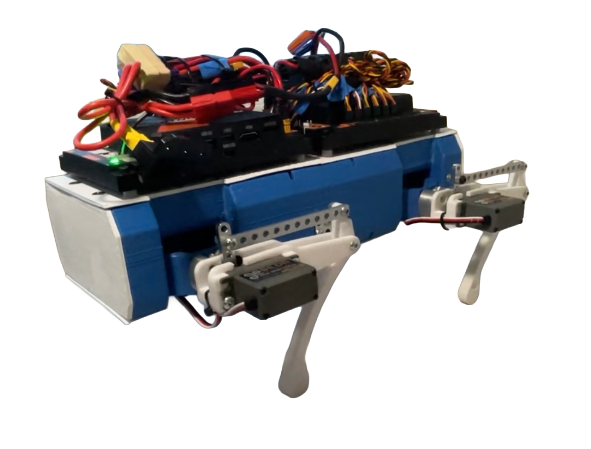

|
Quadruped Robot
This robot was designed as a personal capstone project. All my previous building experience was from my robotics team, so
this project offered an opportunity to be creative and explore new mechanisms, while working on skills like firmware and programming.
I personally designed, assembled, wired, and programmed the robot.
Whole Robot CAD
|

|
|
|
Quadruped Robot
This project served as an exploration into other forms of robotics aside from my usual wheeled robots for my robotics team,
as well as a way to broaden my skill set. Having always been a fan of MIT’s mini cheetah, I decided to design my own.
Since I was 3D printing, I had more freedom to design structures I would’ve previously been unable to hand-mill.
I focused on developing a modular design, splitting the robot into 4 identical parts for easy designing, printing, and assembling.
The main issue appeared during the 2nd version, when it sagged in the middle due to uneven weight distribution, so for the 3rd
iteration, I added structural support and refined servo placement.
Inspired by woodworking, I used methods like sliding dovetail joints, flatheads, and hidden screws
to produce a clean look while maintaining stability.
This robot was really fun to build, and I also gained more knowledge on working with electronics (Arduino, crimping custom wires, sensors)
and program teleoperation with inverse kinematics.
|
|
|
|
Robot Legs
The legs and rotating system underwent the most significant iterations during the design process.
The first leg design featured individually powered joints with gears. However, the servo positions
were suboptimal because they were located too low on the leg and far from the point of rotation.
To address this, I transitioned to a linkage-powered system, centralizing all servo weight around the top rotating point.
Additionally, the leg’s powering system was inefficient. Similar to the deposition arm on Pegasus,
one servo was burdened with carrying the weight of two servos and the leg, resulting in slow rotation speeds.
By implementing a differential gear design, I was able to double the torque for both movements. I also optimized
the servo layout, repositioning them toward the center of the robot and using axles and gears to efficiently redirect power.
|
|
|
|
Electronics
For this project, I initially used an Arduino paired with a PWM servo driver board to
control all 12 servos on the robot dog, powered by a 6V battery.
This required extensive custom wiring and crimping connectors.
I also experimented with various off-shelf-modules, such as an ultrasonic sensor for
basic collision detection. To improve system integration and compatabilty with my
exisiting components, I later transitioned to a REV Robotics Control Hub (robotics controller).
This allowed me to streamline the electronics setup while taking advantage of onboard features like
a built-in IMU and support for an external camera.
|
|
|
|
Robot Arm & Electronics cont.
To build on my robotic dog project, I integrated a previous mini-project
in which I developed a compact robotic arm for a leader-follower system.
In this setup, an arm equipped with encoders was used to capture motion and control
a second servo-actuated arm, which was all controlled through an Ardunio-based system
to generate data for machine learning applications.
The arm features a custom rack-and-pinion claw mechanisim, enabling a low-profile
and efficient grasping motion. The ultimate goal was to mount this arm onto the robotic dog,
extending its capabilities to physically interact with its enviornment.
|
|
|
{kind=link}